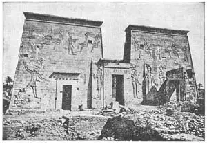
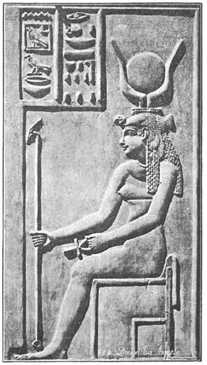

32
THE FIRST SCULPTURE
最初的雕刻

WHEN I was a kindergarten kid, I used to make out of clay a bird’s nest with round eggs and a bird sitting on top. Perhaps you have made the same thing. That was sculpture, but I didn’t know it.
When I was a bigger boy, I used to make in the winter a snow man with a broom handle for a gun and lumps of coal for eyes. That was sculpture, too, though I didn’t know it.
When I was a still bigger boy, I used to take the soft part of a piece of doughy bread and press it into a dog with a head, tail, and feet. That was sculpture, though I didn’t know it and my mother didn’t know it, either, and sent me to the kitchen for playing with my food.
So I was a sculptor until I was twelve years old—and have never been a sculptor since.
But other boys have not stopped being sculptors when they became young men. Once upon a time a boy in a kitchen carved a lion out of a piece of butter and sent it to the table. He became a great sculptor when he grew up. His name was Canova. I’ll tell you about him later.
Men have made sculpture ever since the world was young. But at first the sculpture that men made was very little different from drawing. The artist first drew his picture on something flat, then he carved the lines deeper so that, if it were outside, the rain would not wash the drawing away, nor the weather wear it down. This kind of drawing or sculpture is called sunken relief.
Then, after that, sculptors rounded the edges of the figures they had carved and cut away the background so that the figures stood up a little above the background. This is called low relief or bas relief (spelled bas but pronounced bah), which means the same thing. You may have a bas relief in your pocket and not know it. A penny, nickel, dime, or any other piece of money that has figures on it is bas relief.
Then sculptors began to round the figure still more and cut away still more of the background so that the figure stood out still more. This is called high relief or half round, for the figures were half–way out of the background.
Later, sculptors cut away the background entirely, so that the figure stood out all by itself. This is called full round—you can go “round” it. You will see such pieces of sculpture of men or animals in the parks or squares or museums.
Long, long before Christ was born, the Egyptians had artists who carved pictures in sunken relief on the walls of their great buildings. Here is the front wall of a great temple in Egypt on which you can see such figures cut all over the wall.

No.32-1 GREAT TEMPLE GATES（神庙大门）
Some figures are sitting and some are standing and all may look peculiar to you. Can you tell why?
All of these carved Egyptian pictures or sunken reliefs have two things quite wrong with them, two things quite impossible, besides several things very peculiar. I wonder if you can see what the two wrong things are.
Here is the first thing: the feet are stepping directly sideways and the faces are all turned sideways too, but the shoulders are front view. Now, of course, no one really walks that way, with head and feet sideways and shoulders front view. So the first wrong thing is that the figure is twisted.
The second thing is the eye. What you see is the side face—not the front—yet the eye is the shape of an eye when you see it from the front, not as seen from the side. All their reliefs had the same peculiar shaped eye, also the same twisted bodies. Shoulders and eye are front view, while everything else—hips, legs, and feet—you see sideways.
But there are other strange things to notice about these figures. The man and woman have very little clothing on and, though they are king and queen, they are barefooted. That’s because Egypt is a very warm country. In some warm countries, even to–day, neither rich nor poor, prince nor pauper, wear shoes and stockings. I once went to a dinner party in one of these warm countries and all of the ladies and gentlemen were barefooted. It seemed very peculiar to see the ladies and gentlemen, all gorgeously dressed and wearing many rich jewels, go to the table barefooted!
But to make up for having little on their bodies, these Egyptian figures have a lot on their heads—not regular hats but crowns. These crowns mean something. The woman’s crown— she is a queen—is like a bird cap. The bird is the vulture that feeds only on dead bodies, and above the vulture cap is a moon between two horns. The man’s crown— he is a king—is called a pschent .
These figures are all sunken relief. Now here is the next kind of relief called low relief or bas relief.
This shows the Goddess Isis—the famous goddess of old Egypt—sitting. She is wearing a head–dress and you can see very clearly the shape of the eye and the details of the headdress. In her right hand she carries a rod or scepter—it looks something like a poker—to show she is a queen and in her left hand a strange object which is called the Nile Key.
The peculiar designs on the sides of this picture are the kind of picture writing you read about in the first part of this book—do you remember? They are called hieroglyphics.
For high relief, I’Il show you four huge figures on the front of another temple in Egypt—the Temple at Abou Simbel. They are almost cut away from the background, but not quite. These figures are colossal—that means gigantic, huge, or mammoth—a real man standing beside one, wouldn’t reach half–way to the knee. The Egyptians liked to make giant figures. You’ll notice also that these giant figures are seated in a very stiff position, sitting bolt upright, with both feet flat on the ground and both hands flat on the knees. They are all figures of the same king, Rameses II, called Rameses the Great, for he was the greatest of all the Egyptian king’s, though one of the most cruel.

No.32-2 THE GODDESS ISIS
（伊西斯女神）
Rameses II was the Pharaoh who ordered all the Israelite babies killed and it was his daughter who found the baby Moses in the bulrushes and saved his life. Rameses’s hobby was building temples and statues of himself. He had this temple cut out of the rocky cliff and these huge statues of himself made on the front. The one to the left is the best preserved. Little remains of the next figure. That funny thing on his chin is a beard.
【中文阅读】
我上幼儿园时，用黏土捏过一个鸟窝，里面有圆圆的鸟蛋，上面栖息着一只鸟。你可能也做过类似的东西吧。那就是雕刻，但那时我并不知道。
等我稍微长大一点后，我在冬天堆雪人，拿扫把当枪，用煤块做眼睛。那也是雕刻，虽然我当时并不知道。
等我长大一点后，我常从半熟的面包片上揪下软的部分，再捏成一只小狗的模样，有脑袋，有尾巴，还有脚。那就是雕刻，尽管我还是不知道。连我妈也不知道。她还以为我在糟蹋食物，要把我关进厨房。
所以我从小就是个雕刻家，只不过十二岁以后就不再是了。
但别的孩子没有停止，他们从小到大都在做雕刻。譬如有个男孩曾在厨房里用一块黄油雕出一头狮子，然后放在餐桌上。他后来长大了，成了一名伟大的雕刻家。他的名字是卡诺瓦。后面我会作介绍。
早在世界之初，人类就开始雕刻。但早期的雕刻作品和绘画非常相似。艺术家们首先在一些平滑的东西上画画，再把线条刻深。即使把画放在室外，也不怕风吹雨打。这种绘画或雕刻叫做“陷浮雕”。
接着，雕刻家们开始打磨作品的边角，削掉多余的背景，使作品立体化。这种雕刻叫做“浅浮雕”或“低浮雕”。你口袋里或许就揣着一件低浮雕，只是浑然不知。一个便士、一枚五分镍币、一角硬币或任何刻有图像的钱币，都是低浮雕。
紧接着，雕刻家们进一步打磨作品边缘，去掉更多多余的背景，使雕刻更立体化。这种雕刻叫做“深浮雕”或“半圆雕”，因为这种浮雕有一半已经脱离背景了。
后来，雕刻家们把整个背景都去掉，使作品完全独立。这种雕刻叫做“圆雕”——可以从各个角度来欣赏。我们在公园、广场或博物馆可以看到这类人物或动物雕像。
早在基督诞生之前，埃及就有艺术家在他们宏伟的建筑墙壁上雕刻陷浮雕了。图32-1为埃及的一座神庙大门，你可以看到上面刻满了这类浮雕。
浮雕上的人有坐着的，有站着的，看上去可能都很奇怪。能讲讲原因吗？
事实上，除了几处特别奇怪的地方外，所有这些埃及雕刻或陷浮雕都露出两处明显的错误。不知有没有看出？
请看第一处：人物的脚和脸都直接朝向侧边，但肩膀却朝正面。当然，现实中没人真的像这样：肩膀朝前，头和脚则朝向侧面。所以第一处错误就是人物呈扭曲状。
第二处错误是眼睛。所见的是侧脸，不是正面，但眼睛却呈正面状。埃及所有的浮雕上都有同样奇怪形状的眼睛和扭曲的身躯。肩膀和眼睛虽呈正面，但其他部位，像臀部、腿、脚都呈侧面。
但是，在这些人物身上还能看到其他一些奇怪的现象。虽然雕刻上的男女贵为国王和王后，但他们却穿戴极少，甚至赤脚。这是因为埃及是个炎热的国家。甚至今天，有些气候炎热的国家，不论贫富贵贱，上到皇子王孙下到贫民乞丐都不穿鞋袜。我曾到这样一个热带国家参加一次晚宴，宴会上所有的女士和绅士们都光着脚丫。这些女士和绅士们衣着华丽，佩戴昂贵的珠宝首饰，赤脚从这桌走到那桌，看起来的确让人觉得奇怪。
但是，为了弥补穿戴的不足，就使这些埃及雕像佩带了很多头饰——是王冠而不是普通帽子。这些王冠都别有寓意。王后戴的王冠像鸟。这鸟是一只专食死尸的秃鹰。王冠上有两枚兽角，中间夹着月亮。国王戴的王冠叫做双层王冠。
这些图像都是陷浮雕。下面介绍的浮雕，叫做“浅浮雕”或“低浮雕”。
这是伊西斯女神的坐姿雕像。她是古埃及著名的女神。她戴了一枚头饰，从画中可以清楚地看到她眼睛的形状和头饰上的花纹。她右手握着一根象征王后身份的权杖，看起来就像扑克牌上的那样。她左手拿着一个叫“尼罗河栓”的奇怪物品。
在这画周围有一些奇怪的设计，就是在本书第一部分介绍的象形文字，还记得吗？
至于高浮雕，我要从埃及另一座神庙——阿布辛贝神庙正面的四座巨雕进行介绍。它们几乎都脱离了背景，但又不完全。这些雕像非常庞大，像巨人，像猛犸。要是真人站在旁边，抬手也只能够到小腿的一半高。埃及人喜欢雕刻巨像。我们还会注意到，这些巨像坐姿僵硬：上身直挺，双脚平放在地，双手平摊在膝。这些雕像是同一位国王——拉美西斯二世，也叫拉美西斯大帝。尽管他是最残酷的君主之一，但他仍然是埃及最伟大的国王。
拉美西斯二世就是那位下令杀死所有以色列男婴的法老。然而也正是他的女儿看见了芦苇里的婴儿摩西，救了他。阿美西斯喜欢建造神庙，刻自己的雕像。他把阿布辛贝神庙建在悬崖峭壁上，在庙前雕刻了自己的巨像。左边那座雕像保存最好，可旁边的那座却所剩无几了。雕像下巴上最有趣的那个东西是胡须。